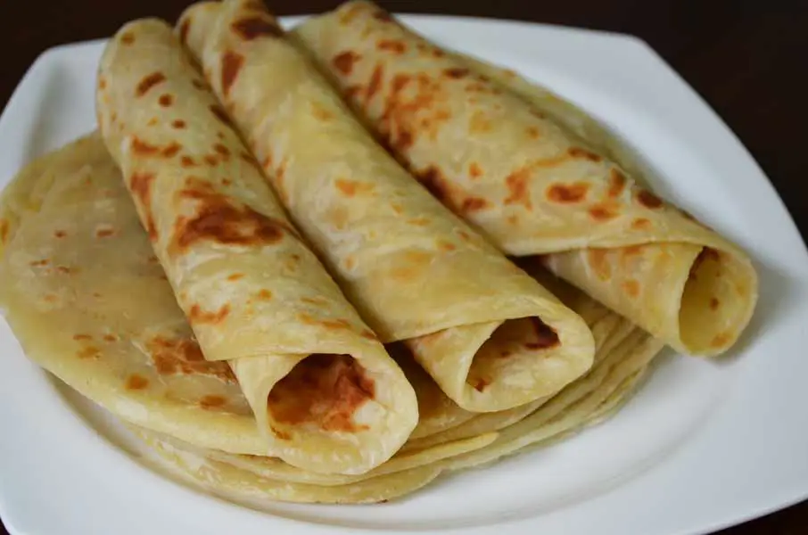

Go Back Home
Chapati

Here's an interesting fact about chapati:
Chapati, also known as roti, is a type of unleavened flatbread originating from the Indian subcontinent.
It is made from whole wheat flour and water, and is typically cooked on a hot griddle called a tava.
Chapatis are a staple in many households and are often served with vegetables, lentils, or meat dishes.
They can be enjoyed plain or with various accompaniments like ghee or chutney. The dough is usually kneaded until
smooth, rolled out into thin circles, and cooked until puffed up and lightly browned.
Ingredients:
- 2 cups whole wheat flour
- 1/2 teaspoon salt
- Water (as needed)
- Ghee or oil (optional, for brushing)
Steps:
- In a large bowl, mix the whole wheat flour and salt.
- Gradually add water and knead until you have a smooth dough.
- Cover the dough with a damp cloth and let it rest for about 30 minutes.
- Divide the dough into small balls (about the size of a golf ball).
- Roll each ball into a thin circle using a rolling pin.
- Heat a tava or skillet over medium heat.
- Cook each chapati for about 30 seconds on one side, then flip it over.
- Press gently with a spatula until it puffs up, then flip again and cook for another 10-15 seconds.
- If desired, brush with ghee or oil before serving.
- Serve hot with your favorite dishes.